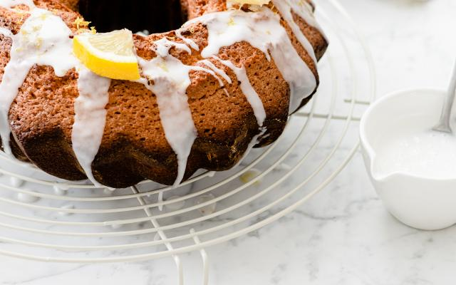

Luchtige citroencake

INGREDIENTEN VOOR 4 PERSONEN
- eieren 5
- rietsuiker 180g
- boter 180g
- zelfrijzende bloem 200g
- citroen 1
Voor de afwerking
- eiwit ½
- poedersuiker 100g
- citroensap
- citroen (in plakjes)
BEREIDING
- Verwarm de oven voor op 180°C. Klop 3 eieren los met een garde en meng er de suiker onder. Smelt de boter
en meng ze onder het beslag. Doe er de bloem, het citroensap en de geraspte citroenschil bij.
- Van de overige 2 eieren gebruik je enkel het eiwit. Klop het eiwit tot schuim en spatel dat voorzichtig
onder het cakebeslag.
- Beboter een tulbandvorm van 24 cm diameter en bestuif'm met bloem. Giet er het beslag in. Zet de bakvorm
in de oven en bak laat de cake zo'n 45 minuten garen.
- Haal de cake uit de oven en laat afkoelen.
- Meng het halve eiwit met de poedersuiker en het citroensap tot een glad glazuur. Giet het glazuur over de
citroencake en werk af met enkele stukjes citroen.